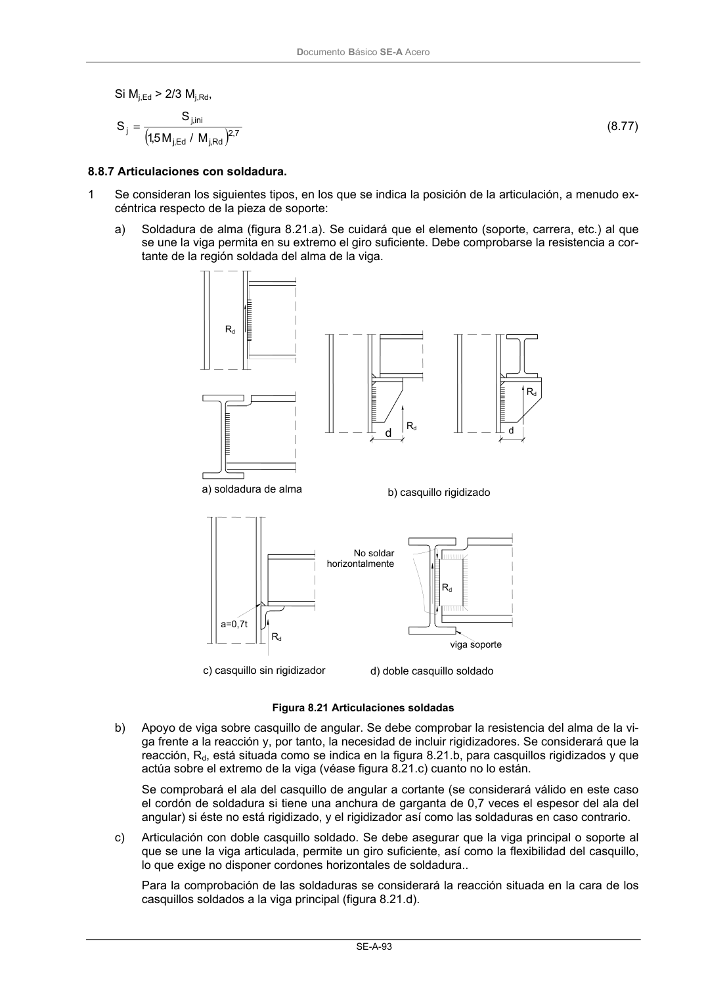
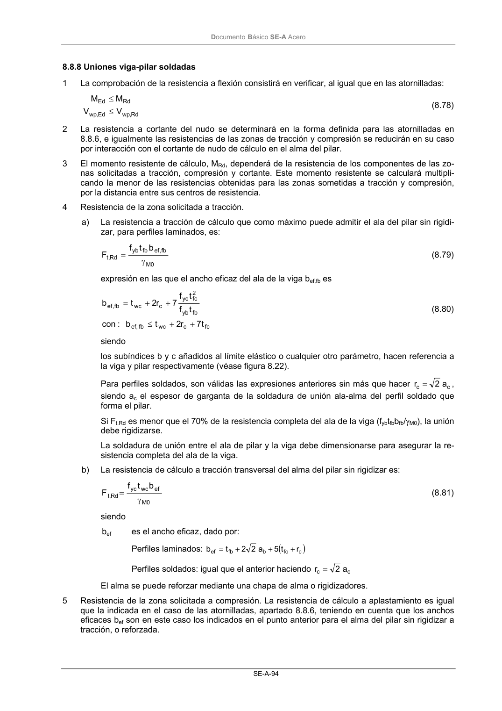

DB-SE-A Acero · edición 2007-10-23 · capa oficial
Documento DB-SE-A-oficial · SHA-256 del PDF 9ed9ea694aabfbda3bfbbef40dfe9223fde05d13c35bc2ba9751e5a96a22a64f
Copia fiel del PDF fuente · Fuente oficial
Ficha de la disposición en la fuente oficial
Formatos: JSON del segmento · Markdown
8.8.7 Articulaciones con soldadura. 1 Se consideran los siguientes tipos, en los que se indica la posición de la articulación, a menudo ex- céntrica respecto de la pieza de soporte: a) Soldadura de alma (figura 8.21.a). Se cuidará que el elemento (soporte, carrera, etc.) al que se une la viga permita en su extremo el giro suficiente. Debe comprobarse la resistencia a cor- tante de la región soldada del alma de la viga. Figura 8.21 Articulaciones soldadas b) Apoyo de viga sobre casquillo de angular. Se debe comprobar la resistencia del alma de la vi- ga frente a la reacción y, por tanto, la necesidad de incluir rigidizadores. Se considerará que la reacción, Rd, está situada como se indica en la figura 8.21.b, para casquillos rigidizados y que actúa sobre el extremo de la viga (véase figura 8.21.c) cuanto no lo están. Se comprobará el ala del casquillo de angular a cortante (se considerará válido en este caso el cordón de soldadura si tiene una anchura de garganta de 0,7 veces el espesor del ala del angular) si éste no está rigidizado, y el rigidizador así como las soldaduras en caso contrario. c) Articulación con doble casquillo soldado. Se debe asegurar que la viga principal o soporte al que se une la viga articulada, permite un giro suficiente, así como la flexibilidad del casquillo, lo que exige no disponer cordones horizontales de soldadura.. Para la comprobación de las soldaduras se considerará la reacción situada en la cara de los casquillos soldados a la viga principal (figura 8.21.d). b) casquillo rigidizado d d Rd Rd Rd c) casquillo sin rigidizador d) doble casquillo soldado Rd a=0,7t Rd viga soporte No soldar horizontalmente a) soldadura de alma DocumentoBásico SE-A Acero SE-A-94

